Some time ago it was discovered that is is possible to repair Thargoid ships with human repair limpets [1]. The discovery opened up the possibility of measuring the properties of Thargoid Interceptor hulls, namely total integrity and Armor Rating. Recent understanding of Anti-Xeno (AX) weapon damage partitions [2] also complements this study well because we’ll know the exact amount of AX damage dealt to the Thargoid Hull—an essential quantity to have when attempting to estimate hull properties.
The goal of this study is to independently confirm previous work on the subject [3] and to extend the analysis to the estimation of Thargoid Interceptor heart integrity. Together with our analysis of Thargoid Interceptor shield properties [4], we’ll have a complete understanding of each Interceptor’s defensive capabilities. AX pilots will be able to leverage this knowledge in the on-going war effort against the Thargoids.
In this study, the estimates of Thargoid Interceptor hull integrity, Armor Rating, and heart integrity were carried out. The results are tabulated below.
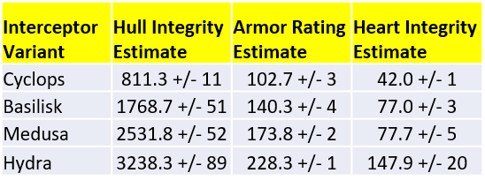
The first column shows the hull integrity estimate for each Interceptor variant along with measurement errors. As expected, there is a monotonic increase in the total hull integrity with the known challenge rating of each Interceptor, with the Cyclops having the lowest hull integrity and the Hydra having an integrity roughly four times higher than that of the Cyclops. The Armor Rating of each Interceptor variant is also progressively higher based on the lethality of the given Interceptor. It should be noted that the Armor Rating of the Basilisk has the exact same numerical value as the Armor Piercing of the Guardian Gauss cannon.
We now turn to the tabulated estimates of the heart integrity for each Interceptor. As expected, the Cyclops has hearts with the lowest integrity of around 40. What was not expected in this analysis is the fact that the hearts of the Basilisk and Medusa variants have nearly identical integrity values of around 77. In a way, this should not come as a surprise given the fact that it only takes one more C2 Gauss Cannon shot to destroy a Medusa heart compared to the Basilisk heart, which is apparently entirely due to the higher Armor Rating of the Medusa. Finally, it appears that, within experimental errors, the integrity of the Hydra heart is roughly twice as high as that of the Basilisk and Medusa variants. A heart integrity twice as strong, coupled with a Hydra Armor Rating of around 225 is why it takes 13 shots of a C2 Gauss Cannon with basic ammunition to destroy a Hydra heart.
The mathematical foundation of this study is straightforward. We assume Thargoid hulls have no resistance or vulnerability (i.e. negative resistance) to AX damage. The relationship between the integrity delivered by the repair limpet and the health recovered by the Interceptor is given by
where H is the total hull integrity, φ is the amount of integrity delivery rate, Δ is the percentage health recovered by the Interceptor, and T_R is the repair time. The parameters Δ and T_R are carefully measured in a controlled experiment.
Now, the relationship between the AX damage dealt to the Interceptor and the corresponding integrity delivered by the repair limpet is given by
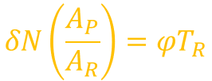
where δ is the AX damage per shot, N is the number of weapon shots, A_P is the weapon Armor Piercing, and A_R is the Interceptor’s Armor Rating. Solving for the Armor Rating, we have
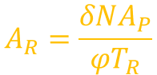
The number of shots N and repair time T_R are measured experimentally. Once the Armor Rating of a given Interceptor is measured, we can then use the following equation to determine the corresponding heart integrity
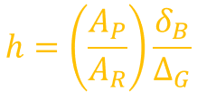
where, δ_B is the AX weapon breach damage per shot, and Δ_G is the percentage health lost by the Interceptor heart when hit with a single weapon shot. In the equation above, Δ_G is experimentally measured as described in the next section. It should be noted that the ratio of A_P and A_R is capped so as not to go higher than unity, which is the case for the Cyclops variant, where the C2 Gauss Cannon’s A_P is higher than the Interceptor’s A_R.
Careful experiments where setup to measure the parameters of the equations outlined in the previous section. In the case of the hull integrity and Armor Rating equations, it was necessary to first destroy all the hearts of a given Interceptor in order to prevent it from healing and to isolate the effect of hull recovery via repair limpet. Once all the hearts were destroyed and the Interceptor shield was fully decayed, damage was dealt to the Interceptor’s hull with a specific AX weapon, namely the C2 Guardian Gauss Cannon. After damage was dealt, a repair limpet was sent to the Interceptor. The number of weapon shots fired at the Interceptor and the amount of time the repair limpet needed to bring the Interceptor’s hull back to full starting health were measured by careful frame-by-frame video analysis of the experiment. Multiple trials were conducted for each weapon type and Interceptor variant.
It should be noted that in each experimental trial, care was taken to fire the AX weapon within the range where the weapon deals maximum damage. Since the Cyclops variant is relatively easy to deal with, a total of 5 different weapon types were used in measuring the hull integrity and Armor Rating. As experiments were conducted on progressively more challenging Interceptor variants, fewer weapons were used in the analysis. In the case of the Hydra variant, the only weapon used was the C2 Guardian Gauss Cannon.
Once the Armor Rating of each Interceptor was measured, we turned our attention to the estimation of heart integrity for all variants. The critical parameter that needed to be measured was the average percentage damage dealt to the heart by the C2 Guardian Gauss Cannon with basic ammunition. This was achieved by carefully recording the percentage health lost by the heart as it was damaged by a single C2 Guardian Gauss Cannon.
We begin with the experimental results of the estimation of Cyclops Armor Rating. Five different weapon types were used against the Cyclops: 1) C2 Gauss Cannon, 2) C3 Plasma Charger, 3) C3 AX Missiles, 4) C3 Shard Cannon, and 5) C3 AX Multi-Cannons. Additionally, a C5 repair limpet controller was used in all experimental trials in this analysis. The C2 repair limpet controller delivers 310 points of integrity in 100 seconds, so exactly 3.1 integrity per second.
The first thing to note about the results above is that, in the case of the Gauss Cannon, the Armor Rating measurement appears to be around 140. That’s because of a limitation in the damage equation outlined in Section 3: the ratio of the weapon Armor Piercing and target Armor Rating saturates at 1, so if the Armor Piercing is higher than the Armor Rating, the resulting A_R measurement will match the A_P. Thankfully, the Armor Rating measurements from all other weapons converges at around 100. At the bottom of the table, highlighted in yellow, is the average result from all non-Gauss weapons, which is 102.7 with a standard deviation of 3.
There is one source of experimental error that deserves some discussion. We noticed that most of the time it takes a certain number of seconds for the hull health to increase by 1%. However, there are times when the video evidence shows that time period to be twice the normal value for a given Interceptor, which may be due to artifacts in the ship’s instrumentation software. For instance, it normally takes 2 seconds for a C5 repair limpet to improve the hull health of a Cyclops by 1%, but there are moments when it appears to take 4 seconds to do so. The same artifact was noticed in all other Interceptor variants, i.e. that it can take the twice the normal amount of time to improve the hull health by 1%. As the total health of the Interceptor increases, the greater that measurement error figures into the estimates.
We now turn to the results for the Basilisk Interceptor. In the case of the Basilisk, only three weapon types were used: 1) C2 Gauss Cannon, 2) C3 Plasma Charger, and 3) C3 AX Missiles. The results are tabulated below. As can be seen, the Armor Rating of the Basilisk is right on the limit of the piercing capability of the Guardian Gauss Cannon. The average Armor Rating estimate from all three weapons comes out to 140.3, with a standard deviation of 4.
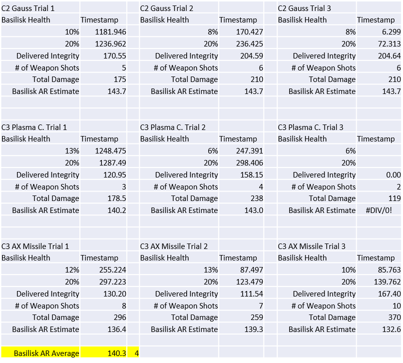
In the case of the Medusa Interceptor variant, only two weapons were used: 1) C2 Guardian Gauss Cannon, and 2) C3 AX Missiles. Only a total of 4 separate trials were conducted, but the results for each weapon are very much self-consistent. The average of all measurements comes out to be 173.8, with a standard deviation of 1.
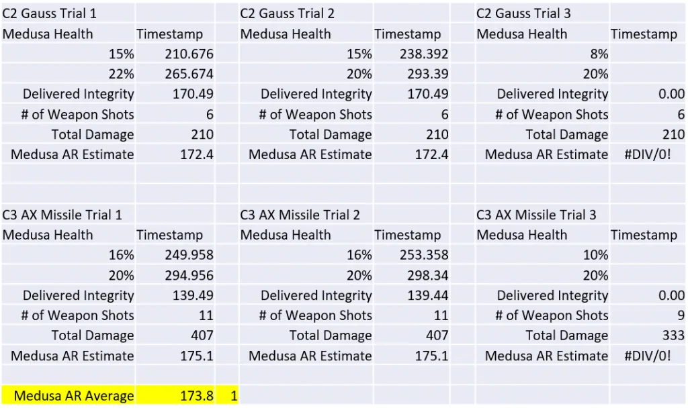
Finally, we have the case of the Hydra Interceptor. Given the tremendous difficulty of taking down a Hydra, only a couple of measurements are reported here. The two trials were conducted solely with the C2 Gauss Cannon. Since it has been established that the Medusa already has a higher Armor Rating than the piercing capability of the Gauss Cannon, the sole usage of the Gauss Cannon is sufficient. The average result of the two trials comes to 228.2, with a standard deviation of 2.
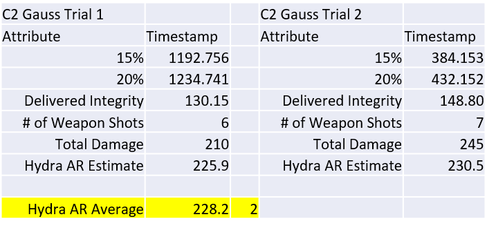
To summarize this section, the Armor Rating estimates get progressively higher the more lethal the Interceptor. The Armor Rating of the Hydra in particular is far higher than the piercing capability of the Gauss Cannon and all other AX weapons, which is part of the reason why it is the most challenging Interceptor to engage.
In this section we report the hull estimates for all Interceptor variants. We begin with the results for the Cyclops. Although 5 different AX weapons were used to measure the Cyclops Armor Rating, here we only use the results for the C3 Plasma Charger and the C3 AX Missiles because they exhibited the least amount of variance across trials. Again, a C5 repair limpet controller was used to repair the Interceptor back to a starting health of 20%. The results are tabulated below. The results average to 811.3, with a standard deviation of 11.
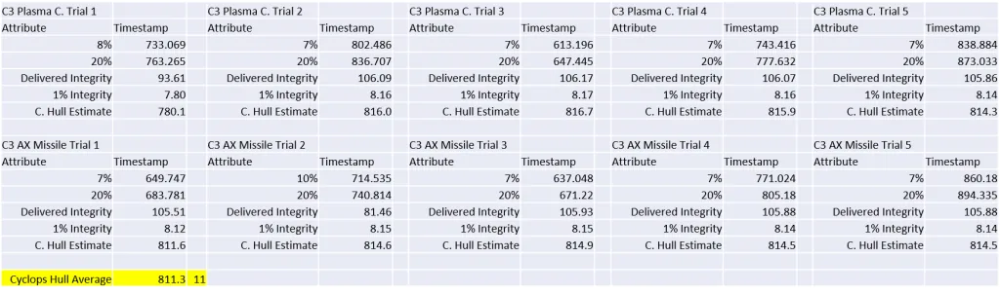
We now turn to the hull estimates for the Basilisk. Here, the C2 Gauss Cannon and the C3 Plasma Charger were used to damage the Basilisk hull, which yielded clean results with a minimum of variation. The average hull estimate for the Basilisk comes out to 1768.7, with a standard deviation of 51. The first thing to note here is that the Basilisk has over twice the health of the Cyclops. The standard deviation across all 5 trials is higher than that of the Cyclops measurements due to the increased uncertainty in limpet repair time, as discussed in the previous section.
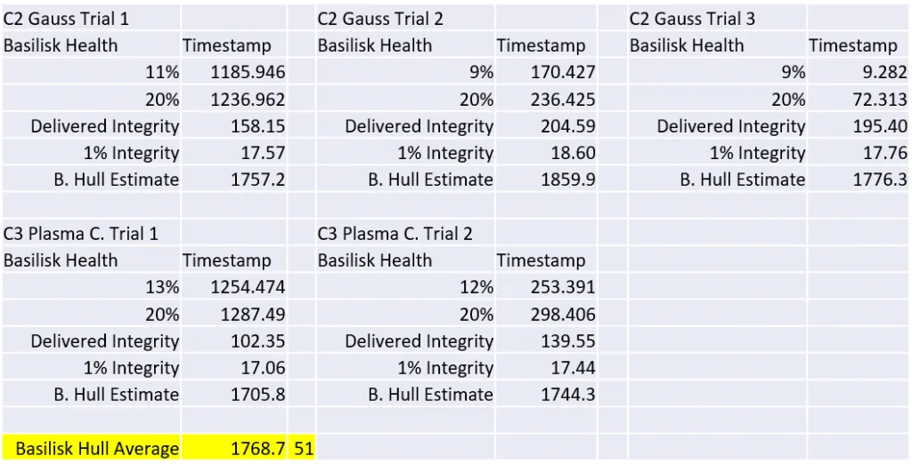
In the case of the Medusa, all four experimental trials that were used to estimate the Armor Rating were also used for the hull estimates. The weapons of choice were the same: C2 Gauss Cannon, and C3 AX Missiles. The average hull estimate for the Medusa is 2531.8, with a standard deviation of 52. The similarity in the magnitude of the measurement uncertainty between the Basilisk and Medusa estimates is probably just an experimental coincidence.
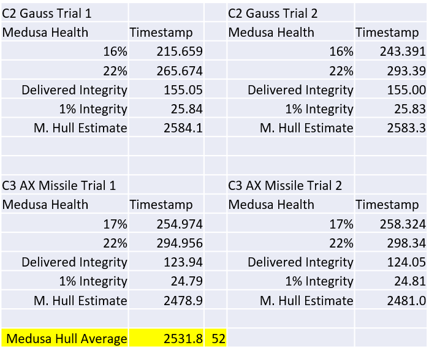
Finally, we turn to the results for the Hydra Interceptor. As pointed out in the previous section, due to the difficulty in bringing down a Hydra Interceptor, only data with C2 Gauss Cannons was collected. The results of four trials is shown below. The average hull estimate for the Hydra comes out to 3238.8, with a standard deviation of 89. The main source of error here is the uncertainty in the repair limpet time, which can be as high as 12 seconds.
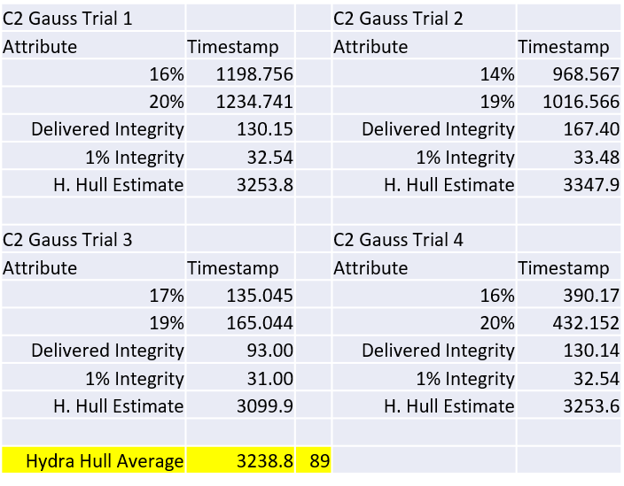
There are no surprises in the results show above. The Hydra has a total hull integrity that is roughly 4 times higher than that of the Cyclops, but it’s true strength lies in its very high Armor Rating.
Here we report the estimates of the heart integrity of each Interceptor. This was achieved by using the Armor Rating estimates from section 5.a in conjunction with measurements of the average percentage damage per shot dealt to the heart by a C2 Gauss Cannon. Measuring the average percentage damage per shot from a C2 Gauss Cannon is straightforward: record the percentage drop after each shot before the heart is destroyed, and simply take the average. The estimated average values are 46%, 25%, 20%, and 8% for the Cyclops, Basilisk, Medusa, and Hydra, respectively.
The heart integrity estimates for each Interceptor variant are shown below. The first thing to note is the general increase in heart integrity with increasing Interceptor lethality. But the interesting thing to note about the results below is the fact that, within measurement uncertainties, the integrity of the Basilisk and Medusa hearts are essentially the same. This result is somewhat understandable given the fact that a single C2 Gauss shot deals almost the same percentage damage to both hearts. The percentage difference between the two types of hearts is entirely attributed to the fact that the Medusa has a higher Armor Rating than the Basilisk.
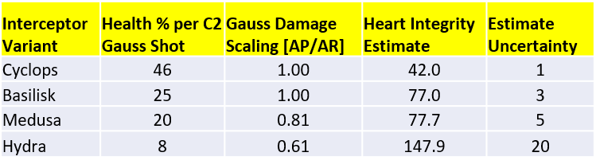
We should note that the measurement uncertainties where estimated by looking at the obtained results after varying the average percentage damage received by each Interceptor heart by 1%. This is because there is an inherent 1% uncertainty in the average percentage damage shot due to the limitations of the ship’s instrumentation software, which rounds the target’s percentage health to the nearest whole number.
The hull properties of each Thargoid Interceptor was reported, namely the total hull integrity, the Armor Rating, and heart integrity. The hull and corresponding Armor Ratings got progressively higher with increasing Interceptor class. The biggest surprise in this analysis came from learning that the integrity of a Medusa heart is the same as that of the Basilisk heart. Otherwise, the heart integrity was progressively higher with increasing Interceptor class.
For purposes of effective Thargoid combat, the results of this analysis, coupled with previous shield strength measurements [4], provide a complete description of Thargoid Interceptor defensive capabilities.
In regards to Thargoid Interceptors, the last academic exercise that needs to be carried out is the measurement of Thargoid hull resistances to human weapons, which will be the subject of a future study.
This study was funded in part by the Canonn Interstellar Research Group and the Xeno Investigation division of the Anti-Xeno Initiative.
We would like to thank CMDR Joulupunikki for participating in this study by helping bring down a Hydra. Special thanks is given to CMDR 100.RUB for providing guidance, words of wisdom, and becoming a strong advocate for transparency in weapon documentation for the benefit of the galactic community. Additionally, thanks is given to CMDR Aranionros Stormrage for making valuable hull strength estimates that were used in this analysis as a reference point.
What follows is an Out-of-Character discussion about the Thargoid Heart damage model used in this analysis. It is done OOC for ease of discussion.
When I presented the results I didn’t mention the fact that those estimates were model dependent, i.e. they relied on a hypothesis about the way Thargoid Hearts take damage from Guardian weaponry. In this short scientific note, I present additional evidence that supports the original hypothesis and helps answer the question above.
Based on casual conversations that we had in the AXI Discord, I used the following equation to determine the integrity of a Thargoid Heart:
where, δ_B is the AX weapon breach damage per shot, Δ_G is the percentage health lost by the Interceptor heart when hit with a single weapon shot, A_P is the weapon’s Armor Piercing, and A_R is the target’s armor rating. The ratio of A_P and A_R saturates at 1. The underlying assumption here, i.e. the damage model, is that the damage taken by the Thargoid Heart is related to the weapon’s breach damage scaled by the ratio of the weapon’s Armor Piercing and the target’s Armor Rating.
It was pointed out by some commanders that Armor Piercing and Armor Rating don’t figure in the damage taken by an internal module. Additionally, there are other factors to consider such as hit boxes, and more importantly, something I believe is known as Armor Thickness, which is defined as a length that is 75% of a ship’s smallest axis [5]. Now, this assumes that Thargoid ships are a faithful “copy and paste” of human ships, and, in turn, that Thargoid Hearts behave like human internal modules. In any case, it was a very valid concern to bring forward (especially the bit about Armor Thickness, which is an obscure feature that few of us would have guessed even existed).
So how do Thargoid Hearts behave exactly? Well, we can start answering that question by considering how Plasma Chargers interact with Thargoid Hearts: when a Plasma Charger shot hits a Thargoid Heart, it inflicts a specific percentage damage to that heart. That specific amount of percentage damage can be estimated within a fraction of 1% by simply measuring the percentage drop in heart health with subsequent shots. That average percentage damage has never been seen to change. The point is this: the weapon’s damage is not subject to a Breach Chance and is not variable at all. The weapon either hits, or it doesn’t…and when it does hit, it deals a specific amount of damage. So, in that sense, Thargoid Hearts are not behaving like human internal modules.
CMDR Aranionros Stormrage was very kind to measure those values himself, as shown in the table below.
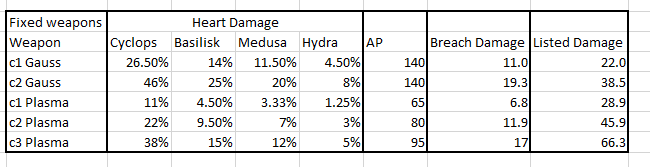
Now, if the damage equation I showed above has any legs, it should be able to predict the measured values for Plasma Chargers fairly accurately. I went ahead and used the measured values of Thargoid Heart intensities and Interceptor Armor Ratings in conjunction with the known Plasma Charger properties of Armor Piercing and Breach Damage to estimate the percentage damage dealt to the Thargoid Hearts by all types of Plasma Chargers. In other words, I solved the damage equation for the percentage damage and plugged in the numbers mentioned above.
The table below is my version of CMDR Aranionros Stormrage’s table, but with the percentage damage estimates from the equation. You can see that there is remarkable agreement between the two tables, especially when one considers the underlying uncertainties in the Armor Rating and Heart Integrity measurements. If I were to exclude Armor Piercing and Armor Rating from the damage model, the numbers in my table would be way off the mark. The equation accurately describes 12 separate data points with great accuracy (16 if you include the results for c1 Gauss, which I’m leaving out for now to focus the discussion on Plasma Chargers), so we’re not just getting lucky here with one or two examples. It should be noted that the C2 Gauss numbers are not shown because they are the input values that were used to estimate the Thargoid hull Armor Rating and Thargoid Heart intensities in the first place.
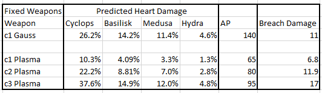
I can therefore make the following conclusions: 1) Thargoid Hearts don’t seem to behave like human internal modules, 2) The Thargoid Heart damage model must consider the target’s Armor Rating and the Weapon’s Armor Piercing.
Now, it’s possible that quantities such as Armor Thickness are part of the damage model, but for some reason—perhaps due to the Interceptor’s funky geometry—the Armor Thickness is such that damage always goes through when a heart is exerted. We may never know, but right now I’m very confident of the heart damage model I’ve used and the conclusions drawn in the main body of this report.